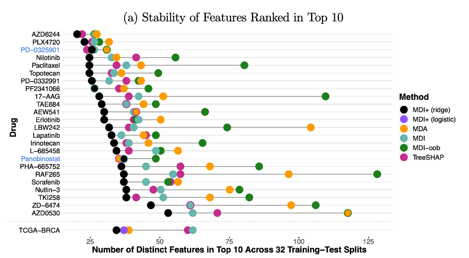
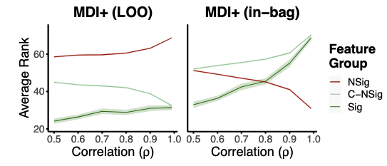

8. Applying CART
application to case study
data-driven basis interpretation
MDI+
comparing importance measures
Learning outcomes
- Describe the theoretical foundation of intrinsically interpretable models like sparse regression, gaussian processes, and classification and regression trees, and apply them to realistic case studies with appropriate validation checks.
- Compare the competing definitions of interpretable machine learning, the motivations behind them, and metrics that can be used to quantify whether they have been met.
Reading
- Section 8.1. James, G., Witten, D., Hastie, T., & Tibshirani, R. (2021). An introduction to statistical learning (2nd edn). doi:10.1007/978-1-0716-1418-1
- PDF available through library: https://search.library.wisc.edu/catalog/9913885290202121
- Sections 3 and 4.1. Agarwal, A., Kenney, A. M., Tan, Y. S., Tang, T. M., & Yu, B. (2023). Integrating random forests and generalized linear models for improved accuracy and interpretability. doi:10.48550/ARXIV.2307.01932
- Will not appear on the exam but will appear on HW
CART Case Study
The Voter Turnout Problem
Data. 344,084 observations - Control group: 191,243 - Treatment groups (civic duty, hawthorne, household, neighbor): ~38,200 each
Predictors. Voting history (5 binary indicators for past elections) and age
Question. Which voters respond most to social pressure treatments?
Strategy
Learn partition \(\{R_j\}\) of predictor space using only non-treatment variables.
Estimate treatment effect \(\tau(x)\) within each region \(R_j\): \[\hat{\tau}_j = \bar{y}_j^{\text{treated}} - \bar{y}_j^{\text{control}}\]
This identifies treatment effect heterogeneity.
Tuning
Cross-validate complexity parameter \(cp \in [0.0001, 0.1]\).
Optimal tree balances partition refinement against generalization.
Trained Tree Structure
[Include visualization of fitted tree]
Partition-wise Treatment Effects
[Include figure showing \(\hat{\tau}_j\) across regions]
Target group. Treatment effects concentrated among occasional voters within specific age groups.
Zero-effect regions. “Always voters” and “never voters” show minimal treatment response.
Mean Decrease in Impurity (MDI)
For feature \(X_k\), add the impurity reductions across all splits on \(X_k\): \[\text{MDI}_k = \sum_{s \in S^{(k)}} \frac{N(t(s))}{n} \hat{\Delta}(s)\]
where \(S^{(k)}\) are splits using \(X_k\), \(N(t(s))\) is node size, and: \[\hat{\Delta}(s) = \frac{1}{N(t)} \left[\sum_{i \in t} (y_i - \bar{y}_t)^2 - \sum_{i \in t_L} (y_i - \bar{y}_{t_L})^2 - \sum_{i \in t_R} (y_i - \bar{y}_{t_R})^2\right]\]
Problem. MDI has a bias towards high-cardinality features and is unstable when features are correlated.
MDI+
Trees as Linear Models
Observation r Citep(bib, "Klusowski2023"). A decision tree with splits \(S = \{s_1, \ldots, s_m\}\) is equivalent to linear regression on transformed features.
For each split \(s\) of node \(t\) on feature \(X_k\) at threshold \(\omega\), define: \[\phi(x; s) = \frac{N(t_R) \mathbb{1}\{x \in t_L\} - N(t_L) \mathbb{1}\{x \in t_R\}}{\sqrt{N(t_L) N(t_R)}}\]
Feature map. \(\Phi(x; S) = (\phi(x; s_1), \ldots, \phi(x; s_m))\) Tree predictions \(\hat{f}(x)\) equal OLS predictions on \(\Phi(X; S)\).
What This Means Geometrically
Each split \(s\) creates a decision stump, an indicator showing whether \(x\) falls left, right, or outside node \(t\).
The matrix \(\Phi(X; S) \in \mathbb{R}^{n \times m}\) is the learned basis from the tree structure.
What This Means Geometrically
Tree model: \(f(x) = \beta_0 + \sum_{j=1}^m \beta_j \phi_j(x)\)
This is just linear regression in the \(\phi\) coordinates.
MDI as \(R^2\)
Partition splits by feature: \(S = S^{(1)} \cup \cdots \cup S^{(p)}\)
Let \(\Phi^{(k)}(X; S)\) be stumps splitting on \(X_k\).
Theorem. \[\text{MDI}_k = \text{TSS} \cdot R^2(y, \hat{y}^{(k)})\]
where \(\hat{y}^{(k)}\) are fitted values regressing \(y\) on \(\Phi^{(k)}(X; S)\) alone.
MDI measures how much variance \(X_k\) explains using only its splits.
The Overfitting Problem
MDI evaluates \(R^2\) on the same data used to build the tree.
This is data snooping! Features that happened to reduce training RSS get inflated importance.
Worse: tree construction already biases toward high-cardinality features and is unstable under correlation.
MDI+ Ideas (section 4.1)
Replace in-sample \(R^2\) with proper out-of-sample evaluation.
- New features. Add raw \(X_k\) to \(\Phi^{(k)}(X)\) to capture smooth/additive structure trees miss
- Regularize. Fit penalized GLM (e.g., lasso) on augmented features
- Leave-one-out. Evaluate importance using LOO predictions, not training fit
MDI+ Algorithm (section 4.1)
Given tree \(S\) trained on bootstrap sample \(D_n^*\):
Step 1. Create augmented feature map \[\tilde{\Phi}^{(k)}(X) = [\Phi^{(k)}(X), X_k]\]
Step 2. Fit regularized GLM \(M\) on full data using \(\tilde{\Phi}(X)\). Tune penalty \(\lambda\) via approximate LOO.
Step 3. For each feature \(k\) and observation \(i\), compute LOO partial prediction: \[\hat{y}_i^k = g^{-1}\left(\sum_{j \neq k} \bar{\tilde{\phi}}_j \hat{\beta}_j + \tilde{\Phi}^{(k)}(x_i) \hat{\beta}_{-i}^{(k)}\right)\]
where \(\hat{\beta}_{-i}^{(k)}\) are coefficients fitted without observation \(i\).
Step 4. Measure similarity between \(y\) and \(\hat{y}^{(k)} = (\hat{y}_1^k, \ldots, \hat{y}_n^k)\): \[\text{MDI}_k^+ = m(y, \hat{y}^{(k)})\]
Justification
Augmentation. Trees partition with axis-aligned rectangles. Adding raw \(X_k\) captures linear/smooth effects the stumps miss.
Regularization. High-dimensional, correlated features from stumps + raw variables need to be stabilized.
LOO. Separates training from evaluation. Prevents overstating importance of features that fit training noise.
GLM flexibility. Use logistic regression for classification, Huber loss for robustness, etc.
Theoretical Guarantees
Under certain conditions, MDI+ achieves:
- Consistency. Recovers true importance ranking as \(n \to \infty\)
- Stability. Less sensitive to feature correlation than MDI or MDA
- Debiasing. Mitigates tree construction bias toward high-cardinality features
See paper for formal statements.
MDI+ Stability

MDI+ Under Correlation

Practical Considerations
Hyperparameters
- Choice of augmentation (raw features? polynomials?)
- GLM family (gaussian, binomial, etc.)
- Penalty strength \(\lambda\) (tuned via LOO CV)
- Similarity metric \(m\) (negative MSE, correlation, etc.)
Computational cost. Approximate LOO (Rad & Maleki 2020) avoids refitting \(n\) times. Nearly same cost as standard RF.
Package. Available in the imodels package (https://csinva.io/imodels/).
Takewaways
Decision trees are closely connected to linear regression through a learned piecewise constant basis \(\Phi(X; S)\). MDI is \(R^2\) of partial regressions on this basis but suffers from overfitting.
MDI+ corrects this by:
- Augmenting with features trees naturally miss
- Regularizing high-dimensional basis
- Evaluating out-of-sample via LOO